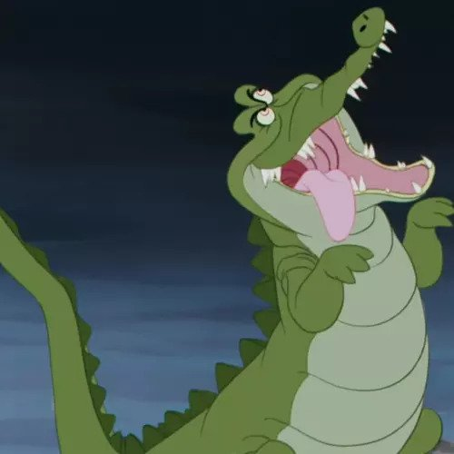
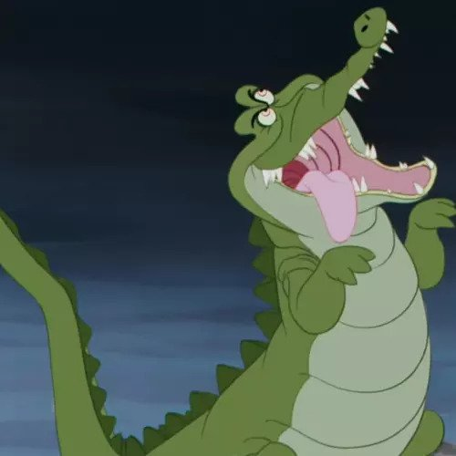

Crococinema este un loc magic unde lumea fascinantă a filmului poate
să se relaxeze alături de noi, dând naștere unei experiențe de neuitat
pentru toți vizitatorii. Crococinema este situat într-un mediu
natural, cu vegetație pompoasă și lacuri cristaline, oferind o
atmosferă deosebit de plăcută. Odată intrați, vizitatorii sunt
invitați înăuntru să descopere minunile cinematografiei.
Aici,
veți găsi o sală de cinema modernă, dotată cu tehnologie de ultimă
generație, unde se proiectează cele mai noi filme din toate genurile.
Astfel, CrocoCinema este destinația ideală pentru o ieșire în orice
perioadă a zilei, cu prietenii sau familia. Vă garantăm că va fi cea
mai bombastică experiență, unde fiecare moment este plin de surprize
și încântare.
În plus, complexul oferă o gamă variată de
facilități și activități interactiv, cum ar fi hrănirea crocodililor
sau excursii pe barci pentru a explora mai aproape lumea fascinantă a
acestor creaturi uimitoare. Crococinema reprezintă un loc unde pe
langa vizionarea filmelor, distracția isi face aparitia, in acest fel
fiecare vizită devenind o experiență unică și memorabilă.

 


Puss in Boots

"Motanul Încălțat" este un film de animație plin de aventuri și umor. Personajul principal, Motanul Încălțat, pornește într-o călătorie alături de prieteni pentru a găsi ouă de aur magice. Pe parcurs, ei se confruntă cu pericole, inamici și dezvăluie secrete din trecut. Filmul oferă o perspectivă nouă și captivantă asupra acestui iubit personaj din seria "Shrek". Potrivit pentru toate vârstele.
Harry Potter

Filmul "Harry Potter și Piatra Filozofală" este primul din celebrul franciză "Harry Potter", bazată pe romanele lui J.K. Rowling. Aici, tânărul Harry Potter, un băiat orfan care descoperă că este un vrăjitor, primește o invitație la Școala de Magie și Vrăjitorie Hogwarts. Acolo, împreună cu prietenii săi Ron și Hermione, explorează lumea magică, descoperă misterele legate de Piatra Filozofală și se confruntă cu cel mai întunecat vrăjitor al tuturor timpurilor, Lordul Cap-de-Mort.